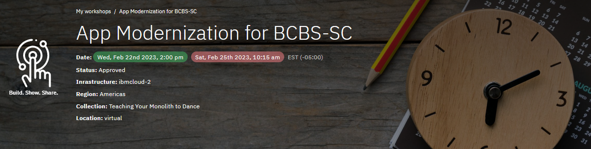
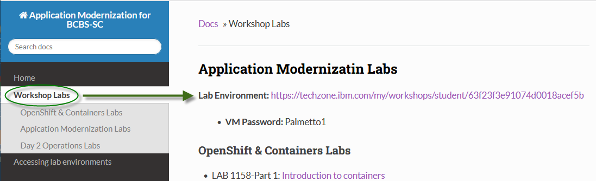
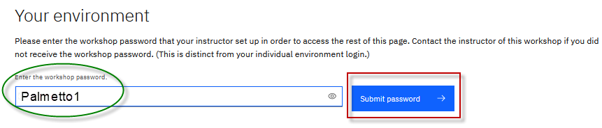
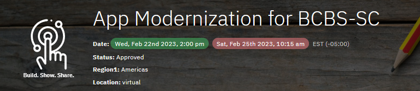
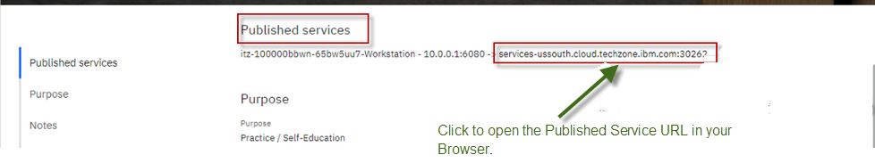

Accessing lab environment

-
Go to the Attendee Lab URL from the Workshop Labs menu item,
From the Workshop Labs menu item, select the Lab Environment URL for the specific lab(s) you want to run

-
Enter the workshop password: Palmetto1 and click Submit button

-
Click the URL to your environment and enter the password that is displayed on the page, which is unique to your environment.
 
-
The Published Service provides direct access to the VM environment that is used for all of the labs in the workshop.
-
Follow the lab guide for instructions for accessing the environment through the Published Service
Note: Each lab guides include the information acessing the VM, how to login to the VM, login credentials, etc.